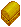
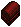
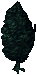
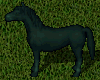
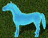
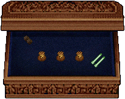
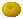
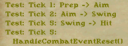

新規Publishなど、仕様の変更が行われるときには大抵Test Centerが作成されます。ここでは、TestCenterのみの特別な仕様について 紹介します。
Publish43のTCより、help commandsおよびhelp skillsと発言することで、 関連するヒントがログとは別に表示されるようになりました。
１．ステータスの変更
キャラクターのステータスは、"set (str/dex/int) 10〜125"と発言することで自由に設定することができます。（help commandsでもステータスの変更方法が説明されています）
ステータスを変更するときの注意点は下記のとおりです。
- ステータス合計値の最大は255です。
- アイテムによる補正を受けてない状態では、各ステータスの最小は10、最大値は125です。
- セットアーマーの効果発動時、Magery魔法またはポーション飲用によるステータス変化時には、発言コマンドでステータスを変更させることは できません。
２．スキルの変更
キャラクターのスキルもステータスと同様に、"set スキル 0〜1000（PSCのあるスキルは1200）"と発言することで自由に設定することができます。スキル名に対応するスキルセット用の名前は下記のとおりです。一部、スキル名とスキルセット用の名前が異なっていますので注意してください。
スキル名 → スキルセット用（help skillsでもセット用のスキル名が表示されます）
- Miscellaneous
- alchemy → alchemy
- blacksmithy → blacksmith
- bowcraft/fletching → fletching
- bushido → bushido
- carpentry → carpentry
- chivalry → chivalry
- cooking → cooking
- fishing → fishing
- focus → focus
- healing → healing
- herding → herding
- lockpicking → lockpicking
- lumberjacking → lumberjacking
- magery → magery
- meditation → meditation
- mining → mining
- musicianship → musicianship
- necromancy → necromancy
- ninjitsu → nintitsu
- remove trap → removetrap
- resisting spells → magicresist
- snooping → snooping
- spellweaving → spellweaving
- stealing → stealing
- stealth → stealth
- tailoring → tailoring
- tinkering → tinkering
- veterinary → veterinary
- Combat Ratings
- archery → archery
- fencing → fencing
- mace fighting → macing
- parrying → parry
- swordsmanship → swords
- tactics → tactics
- wrestling → wrestling
- Actions
- animal taming → animaltaming
- begging → begging
- camping → camping
- cartography → cartography
- detecting hidden → detecthidden
- discordance → discordance
- hiding → hiding
- peacemaking → peacemaking
- poisoning → poisoning
- provocation → provocation
- spirit speak → spiritspeak
- provocation → provocation
- tracking → tracking
- Lore and Knowledge
- anatomy → anatomy
- animal lore → animal lore
- arms lore → arms lore
- evaluating Intelligence → evalint
- forensic evaluation → forensics
- item identification → itemid
- taste identification → tasteid
- SA New
- imbuing → imbuing
- mysticism → mysticism
- throwing → throwing
３．アイテムの入手
Test Centerでキャラクターを作成すると、下記のテスト用アイテムが銀行に入っています。- Bag Of Ethy's! ： 長期報酬のエセリアル騎乗動物が数種類はいっています。
-  Wooden Box ： 100万gp小切手×2枚、6万gp（金貨）、9000sp（派閥銀）が入っています。
- Magery Items ： Crystalline Ring、Crimson Cincture、Ring of Arcane Tactics、Farmer's Band Of Masteryと
バックパック2つ（内容は下記）が入っています。
 Various Potion Kegs ： 空き瓶×1000、Greater Cure Keg、Greater Heal Keg、Deadly Poison Keg、Total Refleshment Keg、Greater Explosion Kegが入っています。
Various Potion Kegs ： 空き瓶×1000、Greater Cure Keg、Greater Heal Keg、Deadly Poison Keg、Total Refleshment Keg、Greater Explosion Kegが入っています。
- Spell Casting Stuff ： ルーン×5、各種スペルブック、秘薬各種（Magery用は5000、Necro用は3000）
が入っています。
-
Vet Rewards ： Publish42用に準備された新しい長期報酬アイテムが入っています。 冥府の軍馬- Powder of Translocation×100の入った袋
- Bag of Treasure Maps ： 各レベルのトレジャーマップ×2枚、SOSボトル×10本、lockpick×30、Shovel
（help commandsでも入手用のコマンドが表示されています）
発言コマンド ： "give resources"
General Resources が銀行に入ります。中身は下の画像のようになっています。- Bag Of Elven Materials（上段左） ： MLで新規に入手できる特殊宝石および素材201個ずつ、Pristine Dread Horn×5が入っています。
- Runic Tool Bag（上段右） ： 鍛冶、裁縫、大工、弓工Runic Tool全種が入っています（使用回数は全て30000回）
- Raw Materials Bag（下段左１） ： 各種インゴット×5000、各種鱗×5000、各種皮×5000、布×5000、ブランクスクロール×500、骨×100が入っています。
- Bag Of Archery Ammo（下段左２） ： ArrowおよびCrossbow Boltが5000本ずつ入っています。
- Tool Bag（下段中央） ： 各種生産道具、建築ツール、ハサミ、伐採用斧、剪定バサミが入っています。ガラス細工用のBlow Pipeは入っていません。
- Bag Of Recipes（下段右２） ： MLで入手できるレシピ全種が入っています。
- Bag Of Wood（下段右１） ： MLで入手できる特殊木板および普通木板が5000枚ずつ入っています。
- Powder of Fortifying（30000チャージ）
- SA TCより、練成材料が入ったバッグが左上に、魔力抽出バッグが左下に追加されています。
発言コマンド ： "give arties"
Artifacts が銀行に入ります。中身は下の画像のようになっています。- Minor Artifacts（左１） ： Ilshenaur Minor Artifactが全種入っています。
- Tokuno Minor Artifacts（左２） ： Tokuno Minor Artifactsが全種入っています
- Major Artifacts（中央） ： Doom Artifact(Steal/Boss)が全種入っています
- Tokuno Major Artifacts（右２） ： Tokuno Artifactsが全種入っています
- Minor Artifacts（右１） ： ML Minor Artifactが全種入っています。
発言コマンド ： "give armor"
Armor Set Pieces  が銀行に入ります。中身は下の画像のようになっています。（→セット装備）- Juggernaut Set（上段左１）
- Hunter Set Armor（上段左２）
- Paladin Set Armor（上段左３）
- Necromancer Set Armor（上段右３）
- Acolyte Set Armor（上段右２）
- Marksman Set（上段右１）
- Monstrous Interred Grizzle Set Armor（下段左１）
- Warrior Set Armor（下段左２） ： Darkwood製鎧セットが入っています（大工スキルで作成可能）
- Mage Set Armor（下段左３）
- Assassin Set Armor（下段右２）
- Myrmidon Set Armor（下段右１）
発言コマンド ： "give air"
A Pet Air Freshnerが銀行に入ります。
調教されたペットに使用すると、外見が"A Pet Air Freshner"と同じ色に変わります。

発言コマンド ： "give tokens"
Publish43用TestCenterより。この言葉で自分のバックパックに以下のアイテムが入ります。- Heritage Token が9つ
- Shadow item Token
- Crystal item Token
（特典アイテム選択画面：画像容量が多い[約500kB]ため開くまで時間がかかります）
発言コマンド ： "give seeds"
Publish57用(?)TestCenterより。Box of Seedsが銀行に入ります。
- fertile dartが5000
- fragrant seedが10個入ったbag
- peculier seedが18個（内1つはfragrant seed）入ったbag
- 白、黒、オレンジのレアseedが5つずつ入ったbag
- green thornが15本
発言コマンド ： "give plants"
SA用TestCenterより。Plant Spawnerがバックパックに入ります。各色の植物を出現させるアイテム"色 plant spawner"が入っています。
発言コマンド ： "give crystals"
SA用TestCenterより。SA Crafting resourcesがバックパックに入ります。SAコンテンツで使用する材料を出現させるアイテムが入っています。
- void essence spawner
- large crystal spawner
- broken crystal spawner
- toxic venom spawner
- silver serpent venom spawner
- medusa blood spawner
４．その他
- Britain図書館、Vesper博物館、Moonglow動物園の報酬ポイントとして100万ポイントを所持しており、好きな報酬品を入手することができます。
- "set tithingpoints ○○"のコマンドにより、タイシングポイントを設定できます。
タイシングポイントの最大値は100000ポイントです。 - attach ssdebug"のコマンドにより、攻撃速度のチェックを行うことができます。
 - Paint Station
Test Center内での特別なイベント期間中に設置されていることがあります。
通常の染色タブを使うように染色したいものをターゲットした後、0〜2000番の色コードを入力することで、様々な色に染色することができます。